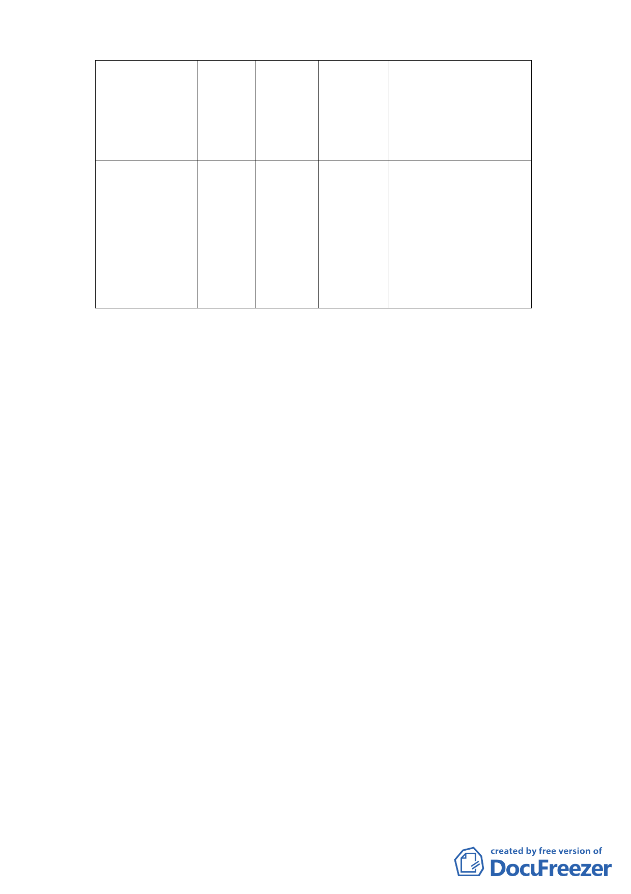

之北側部分土地
信 義 區 信 義 娛樂
段四小段 30 地 設施區
號之北側部分土
地
廣場用地 946
步道用地之北側部分範
圍變更為廣場用地，並
形塑完整廣場式開放空
間。
為保留信義計畫區人行
路網之完整性，將娛樂
設施區之北側部分範圍
變更為廣場用地，並形
塑完整廣場式開放空
間。
（二）土地使用分區管制規定
1.本計畫區之娛樂設施區土地使用管制應依本府 92 年 7 月 2
日府都二字第 09202965800 號公告「修訂臺北市信義計畫地
區內一般商業區、娛樂設施區、特定業務區及業務設施區土
地使用分區管制計畫案」A15 街廓規定使用。
2.廣場用地僅供人潮聚集及活動使用，不得適用「都市計畫公
共設施用地多目標使用辦法」。
3.為增進本計畫區內跨街廓之整體開發與利用，建蔽率、容積
率及使用得跨街廓整體計算及配置，並以立體連通方式連
接。連通設施部分不計入建蔽率及容積率。
（三）都市設計管制要點
1.全街廓開發：本計畫區娛樂設施區併一般商業區，及特定業
務區，應採全街廓開發方式辦理
2.指定留設公共開放空間，以及騎樓、無遮簷人行道、天橋等
人行通路。
四、本案係市府以 100 年 3 月 17 日府都規字第 10030347203 號函
送到會，自 100 年 3 月 18 日起公開展覽 30 日。
五、申請單位：臺北市政府（財政局）。
-4-